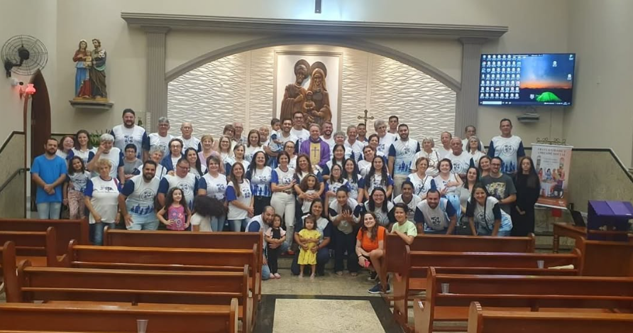
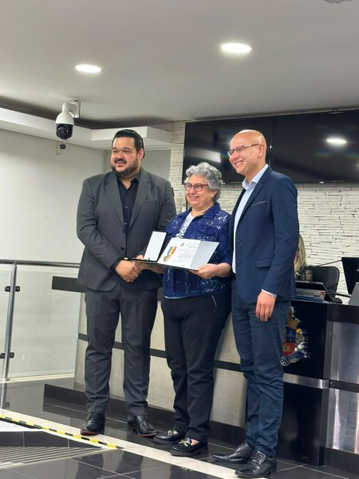
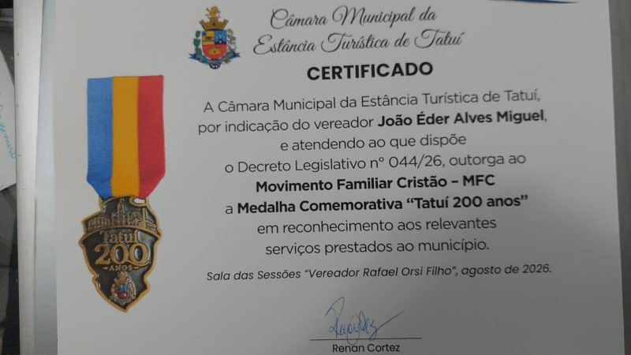

Movimento Familiar Cristão · Tatuí, desde 1965
Famílias que caminham juntas.
Encontros abertos, formação e serviço para casais e famílias de Tatuí. Há um lugar para a sua.


1965em Tatuí
O MFC reúne casais e famílias para viver a fé no dia a dia, fortalecer vínculos e cuidar da comunidade de Tatuí.
Conheça a nossa história →Próximos encontros
A lista vem direto do sistema do MFC. A inscrição abre em uma nova aba, e você continua por aqui.
Ver agenda →Como participar
- 1Escolha um encontroVeja na agenda os encontros com inscrição aberta.
- 2Faça a inscriçãoO formulário abre em uma nova aba, sem você sair do site.
- 3Venha como você éBasta querer conhecer e caminhar com outras famílias.
Medalha “Tatuí 200 anos”
Em agosto de 2026, a Câmara Municipal de Tatuí concedeu ao MFC a Medalha Comemorativa “Tatuí 200 anos”, em reconhecimento aos serviços prestados ao município.
Ler a nossa história →